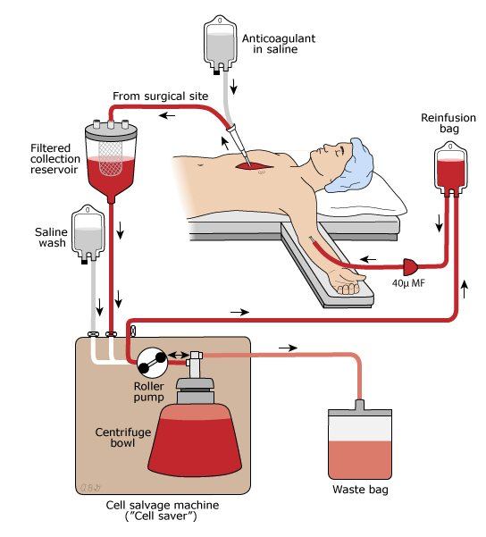

Week 2 · Topic 3
Blood Component Therapy
Four blood products come up regularly: PRBCs, platelets, FFP, and albumin — each for a different problem. The second half of this page covers what can go wrong during a transfusion, and how to respond.
Blood Types & Compatibility
- Two antigen systems determine blood type: ABO (A, B, both, or neither) and Rh (present or absent).
- A patient can only receive blood that doesn't contain an antigen they lack — receiving an antigen they don't have triggers a hemolytic reaction.
- O negative = universal donor (no A, B, or Rh antigens to react against).
- AB positive = universal recipient (already has every antigen, so nothing in a donor's blood is foreign).
Expect select-all-that-apply-style questions here — e.g. "the patient is AB negative, which blood types can they receive?" You don't need the exact population percentages (O+ and A+ are the most common types), just the logic of which antigens are compatible with which.
PRBCs — Pre-Transfusion Responsibilities
| Hemoglobin | General Guidance |
|---|---|
| < 6 | Transfusion recommended except in extenuating circumstances. |
| 6–7 | Depends on symptoms (low BP, compensatory high heart rate). |
| 7–8 | Appropriate for surgical patients (expected blood loss) or patients with heart disease (anemia + heart disease risks angina/MI). |
| 8–10 | Usually only with serious comorbidities — oncology patients, MI/ACS risk, or active bleeding. |
| > 10 | Transfusion is uncommon outside exceptional cases. |
- Type & cross-match must be current within 72 hours — re-draw if it's older than that.
- Confirm positive ID, signed consent, and patient teaching are done.
- Pre-medication is sometimes ordered: Tylenol if at risk for fever, Benadryl if at risk for itching.
- IV access: 20 gauge or larger (18 gauge is ideal). Avoid smaller gauges — they can shear and hemolyze the cells.
- Special Y-tubing with an in-line filter is required — used only for blood products. Prime with normal saline first, then switch the roller clamp to the blood once it arrives; switch back to saline once the unit is in, to flush every last drop through.
- Normal saline only — never hang dextrose or lactated Ringer's with blood, which can cause hemolysis.
- Typical volume: 250–350 mL per unit of PRBCs.
| When | What to Do |
|---|---|
| Before starting | Final patient identity check at the bedside — textbook answer is two RNs (UK Healthcare uses barcode scanning for the second check). |
| First 15–30 minutes | The RN stays at the bedside the entire time to monitor for a reaction — this cannot be delegated to a tech or a student. |
| 15 minutes in | Reassess vital signs to check for any concerning trend before increasing the rate. |
| Every hour until complete | Continue vital sign checks (roughly a 2-hour infusion, unless the patient needs it slowed further). |
| End of transfusion | Final vital signs and documentation. |
Teach the patient what to expect and what to report: itching, chills, shortness of breath, or anything that "feels weird" — the blood itself is cold, so feeling cold at the IV site is expected, but flank/back pain is not and should be reported right away. Afterward, know your orders: a repeat H&H, a diuretic if the patient is at risk for fluid volume excess, or a second unit.
Platelets, FFP & Albumin
| Product | Given For | Key Facts |
|---|---|---|
| Platelets | Thrombocytopenia — often chemotherapy patients. Threshold is roughly <20,000 (normal is 150,000). | Prepared from whole blood. Small bags (30–60 mL); multiple units ("a six-pack") are common. Stored at room temperature, good for 1–5 days. They clump — agitate the bag. Give as fast as tolerated. No ABO compatibility required. |
| FFP (Fresh Frozen Plasma) | Clotting factor deficiency — liver disease, hemophilia, Von Willebrand's. Not the same problem as thrombocytopenia, even though both affect clotting. | The plasma (serous) layer, rich in clotting factors (e.g. prothrombin). ~250 mL. ABO compatibility required. Can be frozen and stored up to a year. Occasionally used as a fluid expander, but that's rare in Med-Surg. |
| Albumin | Low serum albumin — e.g. a liver patient losing fluid into the interstitium (third spacing). | A colloid — has oncotic ("pooling") power that pulls fluid back into the intravascular space. Comes in different concentrations (5% is roughly equivalent to plasma; 25% is hypertonic, used when a stronger pull is needed). Compatibility is not a factor. |
Responding to a Suspected Transfusion Reaction
| Step | Why |
|---|---|
| Stop the transfusion immediately | First priority, regardless of which reaction it turns out to be. |
| Prime a new bag and tubing with normal saline; switch it in at the same IV site | Keeps the line open without pushing residual blood already in the old tubing into the patient — simply flipping back to an old saline line doesn't remove the blood still sitting in that tubing. |
| Assess the patient and get vital signs | Determines severity and which reaction type this likely is. |
| Notify the provider and the blood bank | The blood bank will want to recheck everything to rule out a hang-up on their end or nursing's. |
| Save the blood bag, tubing, and filter; send back to the blood bank | Needed for their investigation, especially if a hemolytic reaction is suspected. |
| Monitor urine output closely | Especially important if a hemolytic reaction is suspected — the kidneys are what's at risk. |
| Complete a transfusion reaction report; collect any specimens the lab wants | Documentation requirement. |
Types of Transfusion Reactions
| Reaction | Signs & Symptoms | Management |
|---|---|---|
| Acute Hemolytic | The patient got incompatible blood — the most life-threatening type. Facial flushing, fever, headache, low back pain (kidneys), possible hematuria, dyspnea, dropping BP, cardiac arrest. | Support blood pressure (colloids/albumin), Foley to monitor urine output for hematuria, send specimens to the lab. Preventable with meticulous bedside verification. |
| Febrile Non-Hemolytic | Temperature rises gradually over the infusion (not immediate) — no back pain, no hematuria, no hemodynamic compromise. | Notify the provider; usually Tylenol and resume. Reduced by leukocyte-reduced products; a patient with a prior fever reaction may get prophylactic Tylenol next time. |
| Mild Allergic | Sensitization to donor WBCs — pruritus, flushing, urticaria (hives). The most common transfusion reaction overall. | Stop the blood, notify the provider — diphenhydramine or a steroid, then usually a slow restart. A patient with a prior reaction may get prophylactic antihistamines and washed RBCs next time. |
| Severe Allergic / Anaphylactic | Anxiety, urticaria, respiratory compromise, bronchospasm, cardiovascular compromise, shock, possible cardiac arrest. | Treated as a code: CPR, oxygen, epinephrine, antihistamines/steroids, possibly a beta-2 agonist. Future transfusions use extensively washed RBCs, and autologous components if possible. |
| Bacterial Sepsis | Rapid-onset chills, high fever, vomiting, diarrhea, marked hypotension. | Obtain blood cultures, stop and return the unit, treat with antibiotics, IV fluids, and a vasopressor if needed (often in the ICU). Prevented by infusing within the 4-hour window and strict aseptic technique. |
| TACO (Transfusion-Associated Circulatory Overload) | Typically an older patient with heart failure given blood too quickly — dyspnea, crackles, increased respirations, headache, distended neck veins. | This is the one reaction where you slow, not stop, the infusion. Notify the provider — likely furosemide (Lasix), oxygen, maybe morphine, and a chest X-ray. For at-risk patients, plan to stretch the infusion closer to the full 4-hour window rather than finishing quickly. |
Leukocyte-Reduced Products
Leukocytes are naturally collected along with whole blood during donation and are considered a contaminating cellular component — they're linked to febrile non-hemolytic and allergic reactions. Removing them (pre-storage leuko-reduction) lowers that risk, and most blood products administered today are leukocyte-reduced for exactly that reason.
Minimizing Reaction Risk — Autologous Donation & Autotransfusion

- Autologous donation: a patient pre-donates their own blood ahead of a scheduled surgery, stored (frozen, it lasts years) for use during that procedure. Guarantees no reaction, since it's the patient's own blood — but it's fallen out of favor because it's expensive, often isn't reimbursed by insurance, and the blood frequently goes unused and wasted if the surgery doesn't require transfusion after all.
- Autotransfusion (cell salvage / "cell saver"): still commonly used. During surgery — open heart surgery is a good example — blood lost at the surgical site is collected, processed through the machine, and reinfused into the same patient rather than wasted. No risk of a transfusion reaction, since it's the patient's own blood.
Self-Test Flashcards
Click a card to flip it and check your answer.